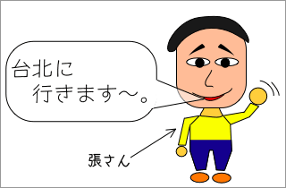
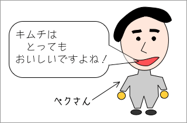
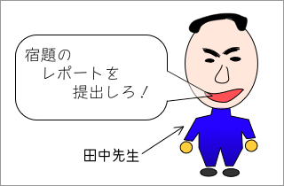
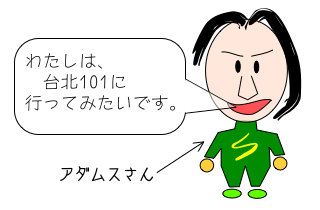

練習１
次の例のように文を書きましょう。

→ 張さんは、「台北に行きます。」と言っています。
→ 張さんは、台北に行くと言っています。
答えが表示されます。 ←の部分にポインタをのせると答えが出ます。
-

→ ペクさんは、「キムチはとってもおいしいですよね。」と言っています。
→ ペクさんは、キムチはとてもおいしいと言っています。
-

→ 田中先生は、「宿題のレポートを提出しろ。」と言っています。
→ 田中先生は、宿題のレポートを提出するように言っています。
-

→ アダムスさんは、「わたしは、台北101に行ってみたいです。」と言っています。
→ アダムスさんは、台北101に行ってみたいと言っています。
練習２
次の例のように、直接話法の文から間接話法の文を書きましょう。
張さんは、「台北に行きます。」と言った。
→ 張さんは、台北に行くと言った。
答えが表示されます。 ←の部分にポインタをのせると答えが出ます。
- 林さんは、「遅くなりまして、申し訳ありません。」と言った。
→ 林さんは、遅くなって申し訳ないと言った。
- 黒川先生は、「授業に遅刻するんじゃない。」と言った。
→ 黒川先生は、授業に遅刻しないように言った。
- 昨夜の天気予報では、「明日は雨です。」と言っていた。
→ 昨夜の天気予報では、今日は雨だと言っていた。
- 彼は、「たすけて！たすけて！たすけて！」と言った。
→ 彼は、何度もたすけてほしいと言った。
- ゆうちゃんは、「わたし、大きくなったらお医者さんになるの。」と言った。
→ ゆうちゃんは、大人になったら医者になりたいと言った。